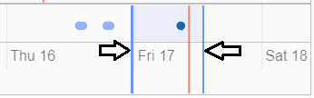

Aviatrix CoPilot User Reference Guide
Aviatrix CoPilot is a component of Aviatrix platform offering that extends visibility into complex, multi-cloud networks deployed and managed by Aviatrix Controller.
CoPilot delivers, end-to-end, in-depth, historical analytics of multi cloud networks with a single pane of glass that offers application flows, inventory, health, and complete topological view of the network.
This guide will provide descriptions and definitions of functionalities that are available in Aviatrix CoPilot.
CoPilot Dashboard
This section describes the Aviatrix CoPilot dashboard.
The CoPilot Dashboard offers a broad perspective on the inventory and status of your deployment. CoPilot Dashboard shows an inventory of all resources across all clouds in your multi-cloud network that are managed by Aviatrix Controller. The Dashboard shows the number and status of these managed resources as well as a breakdown of each on a per cloud basis. A topology geographic map shows where the managed VPCs/VPNs/VNETs are located across the globe.
First displayed in Dashboard are inventory chips providing information about managed resources across your cloud networks. Inventory chips show the number and status of each managed resource.
The number on the inventory chip represents the total number of instances of that managed resource that exists across your multi-cloud network.
To view the status of a managed resource, click the status marker in its associated inventory chip. The status marker is:
-
A green checkmark when all instances of that resource type are on (connected, running).
-
A red exclamation mark when one or more instances of that resource type are off (disconnected, shut down).
-
Virtual Data Center
A Virtual Data Centers (VDC) is a logical “walled garden” that binds different resources together using a shared network space. This is synonymous to VPC in AWS and GCP, vNETs in Azure, and so forth
-
Gateway by type:
It returns distribution of gateways by type. Each pie support on-hover to display the number for that slice represents
-
Accounts per cloud
This chart shows the number of access accounts per cloud
-
Gateway per Cloud
This chart shows distribution of Aviatrix gateways per Cloud
-
Total Bytes
Offers total bytes seen over the network in the past 24 hours
Working with Topology
This section describes the Topology feature of Aviatrix CoPilot.
Topology provides a visual representation of deployed networks, gateways, instances, and gateway connections.
The Topology feature gives you visibility into your network as follows:
-
Network Graph - Network View
In Network Graph, in Network view, CoPilot displays a network topology map that shows the logical and physical layout of how managed network resources are connected across multiple clouds. Topology provides a visual representation of deployed networks (VPCs/VNETs/VCNs), gateways, instances, and gateway connections. CoPilot automatically draws the map when it connects to Aviatrix Controller.
The Aviatrix Gateways running in your multi-cloud network enable you to run diagnostics from them directly from Topology. When highlighting a gateway, click on the DIAG button to see options available for performing diagnostics from the gateway that is in focus.
-
Network Graph - Transit View
In Network Graph, in Transit view, CoPilot shows the topology of your Aviatrix transit network in relation to your deployed Aviatrix transit gateways. By clicking on the Aviatrix transit icon, you can see all of the transit VPCs/VNETs, VPNs that are managed by Aviatrix Controller. By clicking on a region icon, you can see the spoke VPCs/VNETs/VPNs that the controller currently manages. By clicking on a spoke VPC/VNET/VPN, you can see all network constructs inside of that spoke. You can use the search field to find specific resources.
-
Latency Monitor
In Latency Monitor, CoPilot shows detailed latencies, historically for the last hour, last day, last week, and last month, for all links (connections) between managed resources. You can use the date picker to view historical latencies for a custom timeframe. You can filter the historical latency information by search field, such as by the name of a specific gateway to view historical latencies that relate only to that gateway.
-
Topology Replay
In Topology Replay, CoPilot shows what changed in your environment and when it changed. CoPilot shows when route, credential, and other metrics in your cloud network constructs have changed over time. A timeline panel shows you all of the changes (as change sets) that were recorded over the last month. You can analyze the additions, modifications, and deletions recorded in each change set. You can delete change sets when you no longer need them.
Highlights of Topology capabilities
-
Stateful representations
Connectivity elements in Topology reflect the state of the object:
-
Connections between Aviatrix gateways are drawn with color codes representing the status of their connections.
-
Aviatrix gateway icons represent the state of the gateway. A gateway that is down is shown as a black line.
-
Tunnels statuses are shown with green or red lines, representing the status of the link.
-
-
Search for any objects and their properties
In Topology, you can search for any objects that are plotted. This allows you to quickly isolate and identify resources that you are looking for in your entire environment and across clouds.
Interacting with Topology
Objects on the topology maps support drag and drop. You can click, drag and drop resources to reorganize the objects.
|
Tip
You can multi-select objects for drag and drop by holding control/command key and selecting. |
-
Search
The search box allows you to filter the objects that are plotted on the topology.
-
Filter
Filter menu offers the option to hide/show different categories of the objects to ensure the topology shows only what you care about.
-
Layout
You can save and reload layouts in the topology using the layout menu. If you prefer the topology to load a default layout, you can select one as the default.
-
Physics options
By default topology objects are organized using physics engines. This menu allows you to configure physical gravity settings that manage the placement of objects. You can adjust different parameters, or turn the physics off completely for complete control over placement of the objects.
Topology Physics Options
This section describes the physics options that control how objects move in the network topology map.
| Topology Physics Option | Description |
|---|---|
Physics Enabled |
|
Smooth Edges |
|
Node Repulsion |
|
Central Gravity |
|
Spring Length |
|
Spring Constant |
|
Dampening |
|
Max Velocity |
|
Min Velocity |
|
Performing diagnostics from Topology
The Aviatrix gateways running in your multi-cloud network enable you to run diagnostics from them directly from Topology. Performing diagnostics from Topology can dramatically reduce the time spent troubleshooting issues.
To perform diagnostics from Topology (from an Aviatrix Gateway):
-
In Topology, click on an Aviatrix Gateway in the topology map to select it.
-
Click the DIAG button.
-
Perform any of the following diagnostic tasks for the gateway:
-
PING: Run pings directly from the gateway to outside of the Aviatrix managed network or to any resource inside the network.
-
TRACEROUTE: Run trace route.
-
Test Connectivity: Test the connectivity of the gateway to a specified host running on a specified TCP or UDP port.
-
ACTIVE SESSIONS: View sessions that are active on the selected gateway. You can filter active sessions by search criteria. For example, a search on a specific port to see if the gateway has an action session on that port.
-
INTERFACE STATS: View interface statistics about the gateway. The number of interfaces or tunnels associated with the gateway is displayed. Click on the name of an interface or tunnel to see its statistical information.
-
View Topology Changes (Topology Replay)
This section describes how to use the Topology Replay feature of Aviatrix CoPilot. You use Topology Replay to see what changed in your environment and when it changed. This feature can be used, for example, shortly after a problem occurs in the network to see if recent changes to network constructs may have caused the problem. See also Topology Replay Properties.
Topology Replay shows when route, credential, and other metrics in your cloud network constructs changed. The changes are shown for all constructs regardless if they are located in one or multiple clouds. You can view the changes (additions, modifications, and deletions) that were made to the properties of subnets, gateways, and gateway connections. A time series visualization graphs change-set data as points (blue dots) with each change set collected at one-minute intervals. Clicking on a change set in the time series panel loads it into the topology map and changes details pane where you can inspect the data. For more information about UI controls in topology replay, see Topology Replay Properties.
To view topology changes in your environment:
-
Log in to CoPilot.
-
From the sidebar, click Topology, and then click the Topology Replay tab.
The topology replay page opens showing a topology map, a changes details pane, and a time series panel.
-
Locate and load the changes you want to inspect:
-
(To locate the most recent changes) When the page first opens or is refreshed, the most recent change set is automatically loaded in the topological map and details pane. In the time series panel, the change set is shown as a dark blue box that indicates the number of changes within it. For example, 120 Changes (this is the default title of the change set).
-
(To locate earlier changes) By default, in the time series panel, CoPilot shows changes that occurred within one-minute increments. Each Expand icon has a number which represents the number of change sets that exist in that focused time period. Click on an Expand icon to zoom into that time period.
Note: Alternatively, on the track pad, pinch or stretch out two fingers to quickly zoom out of or zoom into a time period.
The bottom of the time series visualization shows changes that were recorded over the last week. There, you can drag the time-window control lines (blue vertical lines) to encompass a day (or multiple days) to quickly zoom into change sets for that time period.
Keep zooming into a time period until you see a View icon. The View icon indicates a change set at that point in time. Click on the View icon to load the change set. It may take a few seconds to load. After it loads, the View icon is replaced by a blue box with the title of the change set (the title reflects the number of changes in the change set). Hovering over the blue box displays the end time of the change set.
-
(To locate a specific change by title or note) You can change the titles of change sets. You can also associate notes with them. To search for a specific change set based on a previously applied title or note, click the search icon in the changes details pane, enter any text that is part of the title or note, and then click Search. Change sets matching the search criteria are listed. Click on one from the list to load it.
-
-
Inspect changes for a loaded change set.
You inspect changes for a change set in the changes details pane.
When inspecting changes: * Network constructs are organized by construct type in a tree view. Expand the tree for each contruct type to drill down to properties of that construct that were added, modified, or deleted. Changes are shown as green for additions, orange for modifications, and red for deletions. * Click on a network construct in the topology map to bring its change details into focus in the details pane. * For each selected construct in the changes details pane, select or deselect the eyeball icon to toggle between showing only changed data for a construct or showing all data for a construct (to put the changes in context). * Click the AUDIT button to open the Audit tab of the Security section where you can see which users made API calls to Aviatrix Controller during the time period of the change set.
-
(To modify the title of a change set) To modify the title of a change set that is loaded in the changes details pane, click on the red notepad icon to open note view. The title is displayed over the dates (the default title is the number of changes in the change set). Click the blue pen icon. Select the title and change it, and then click the Save icon. When you search the timeline for change sets, you can now search by your title text.
-
(To associate a note with a change set) To associate a note with a change set that is loaded in the changes details pane, click on the red notepad icon to open note view. Click the blue pen icon, type your note, and then click the Save icon. When you search the timeline for change sets, you can now search by your note text.
-
(To delete a change set) To delete a change set that is loaded, in the time series panel, click on the red X associated with the dark blue box that represents it. It will be permanently deleted from the topology-replay database. You can also choose to delete all previous change sets recorded up to that point.
Topology Replay Properties
This section describes properties of the Topology Replay feature in Aviatrix CoPilot.
Topology Replay - Topology Map
The topology map shows network constructs that were changed in the environment for changes associated with the currently loaded change set.
Properties of the topology map include:
-
Show full topology
Click Show full topology to see how the changed constructs relate to all constructs in your Aviatrix managed environment (the full topology is shown at that point in time).
-
Disable physics
Click Disable physics if you do not want objects to move on their own and have them stay in the location you place them (when you click and drag them there).
-
Hide Highlights
Click Hide highlights to remove the circles from the objects in the map that denote they represent changed constructs.
Topology Replay - Changes Details Pane
The changes details pane shows all details for the currently loaded change set, including:
-
The name of the change set (reflecting the total number of changes in it).
-
The start time and end time for which changes were recorded.
-
The number of changes by type that were made to the properties of constructs:
-
Additions
-
Deletions
-
Modifications
-
-
The network constructs that are associated with the changes organized by construct type in a tree view. Detailed information about what metrics changed for each construct is shown. For modifications, the old value is shown striked out near the new value.
Properties of the changes details pane include:
-
AUDIT
Click the AUDIT button to open the Audit tab (of the CoPilot Security page) where you can view the users that made API calls to Aviatrix Controller during the time period of the change set.
-
NOTES
Click the red notepad icon to associate a note with the loaded change set or to change the change set’s title. Click the blue pen icon, then edit the title or add/edit a note, and then click the Save icon. The title is displayed over the dates (the default title is the number of Changes in the change set). When you search the timeline for change sets, you search by your title or note text.
-
Search
Use the search to search for change sets by your custom change-set title or note text (for notes you associated with changes sets).
-
Show only changed data/ Show all changes
Use the eyeball icon to toggle between showing only changed data for a construct or showing all data for a construct (to put the changes in context). This option can be set per construct, per construct type, or globally.
Topology Replay - Time Series Panel
The time series visualization graphs change-set data as points (blue dots) with each change-set collected at one-minute intervals shown in the change timeline (top half of the panel). The overview timeline in the time series panel (bottom half of the panel) shows the duration of all replay data (from the first replay date to the current date). The most recently recorded change set is shown as a dark blue box labeled with the number of changes in that change set.
Properties of the time series panel include:
-
Currently loaded change set
The time series panel highlights the current change set as a dark blue box labeled with the number of changes the change set contains. Hover over the box to view the end time of the change set. The green box represents the base of the currently loaded change set.
-
Expand controls to zoom into a time period
In the change timeline (top half of the panel) each Expand icon has a number which represents the number of change sets that exist in that change-set cluster. On your track pad, pinch or stretch out two fingers to quickly zoom into or zoom out of a time period to view change sets that occurred within a more narrow timeframe. You can also zoom into a time period by clicking on the Expand icons. You can click on and drag the top of the panel backward and forward to view changes that happened minutes earlier/later.
-
Time-window control lines
In the overview timeline (bottom half of the panel), after you zoom into a time period by clicking on the Expand icons or by using your track pad, two time-window control lines (blue vertical lines) display near the current time (the red line). Drag the time-window control lines where needed to focus in on the day or days you want to locate change sets in.
 -
View controls to load a change set
The View icon indicates a change set at that point in time. Click on a View control to load a change set; this populates the network constructs associated with the changes in the topology map and displays the details for their changes in the changes details pane. The constructs associated with the changes are circled in the map.
Working with FlowIQ
This section describes the FlowIQ feature of Aviatrix CoPilot.
FlowIQ provides you with critical visibility capability to the traffic that traverses your network, displaying metadata about traffic that flows across each link. FlowIQ provides visualization of traffic flows, enabling you to inspect any network traffic that is moving across any gateway managed by the Aviatrix Controller in your Aviatrix transit network (multi-cloud or single cloud network). FlowIQ enables you to identify where data in your network is going to and where it is coming from and you can filter for detailed information about the traffic down to the packet level.
Interacting with the flows
FlowIQ provides various views for visualizing traffic records. The views respond to filters that are selected. The filters that you set are carried across all of the views.
FlowIQ overview page
In the FlowIQ overview page, CoPilot provides an overview of all the traffic that has traversed across your Aviatrix transit network over the last hour, day, week, month, or over a custom timeframe.
The traffic information is broken down into various categories displayed in pie charts.
By default, the pie charts show details for all traffic. You can filter the information to show only the traffic you are interested in analyzing. When you click on any pie-chart slice, CoPilot automatically creates a filter that narrows down the information displayed across all pie charts. Each time you select another slice, CoPilot adds another rule to your filter group.
After you analyze traffic data based on one or more filters, clear the filter(s) so that CoPilot returns to showing data for all traffic.
FlowIQ flows page
In the Flow IQ flows page, CoPilot shows all the traffic that is currently seen by your multi-cloud transit no matter which cloud the traffic is on.
You can view how much traffic was sent in the last hour, day, week, month, or a custom timeframe.
The pie charts show which source addresses and destination addresses receive the most and least bytes of data for the top 10 addresses.
Using the Sankey graph, you can easily identify which source and destination hosts have the most traffic being exchanged between them (top talkers) in your network by the thickest colored bars. Hover over each colored bar to see what destination host the source host is sending traffic to based on how much traffic is being sent between them.
FlowIQ geolocation page
In the Flow IQ geolocation page, CoPilot provides an overview of where traffic is coming from and going to within your cloud fabric over the last hour, day, week, month, or over a custom timeframe. The map shows the approximate location of your Aviatrix managed network constructs across the globe.
When you set the time period to Last Day, you can more easily see where most of the traffic is coming from and going to.
Security teams can use the geolocation view to easily identify which countries the traffic coming into their network is coming from to help determine if unexpected traffic poses a security vulnerability.
The geolocation traffic information is broken down into various categories displayed in pie charts.
By default, the pie charts show details for all traffic. You can filter the information for the pie charts to show only the traffic you are interested in analyzing. When you click on any pie-chart slice, CoPilot automatically creates a filter that narrows down the information displayed across all pie charts. Each time you select another slice, CoPilot adds another rule to your filter group.
After you analyze traffic data based on one or more filters, clear the filter(s) so that CoPilot returns to showing data for all traffic.
FlowIQ trends page
In the FlowIQ trends page, CoPilot shows an overview of traffic as it moves over time for traffic based on:
-
A specified destination port.
-
A specified source address.
-
A specified destination address.
-
Total bandwidth based on direction of traffic, ingress or egress.
By default, the graphs show details for the top ten results. You can filter the information for the graphs to show only the traffic you are interested in analyzing. When you click on any pie-chart slice (or listed value), CoPilot automatically creates a filter that narrows down the information displayed across all graphs. Each time you select another slice, CoPilot adds another rule to your filter group.
After you analyze traffic data based on one or more filters, clear the filter(s) so that CoPilot returns to showing data for the top ten results.
FlowIQ records page
In the FlowIQ records page, CoPilot shows detailed information about all the traffic flows seen by your multi-cloud transit no matter which cloud the traffic is on.
The Flow Records table shows you the detailed records of the traffic down to the packet level.
You can filter the flow records in the Flow Records table by hovering over any value in the table and selecting the filter icon.
You can export the flow records data table to CSV if you want to save them for later viewing or import them into your own analytics platform.
Working with Performance
This section describes the Performance feature of Aviatrix CoPilot.
In Performance, CoPilot displays the resource utilization (telemetry) data for all managed resources across your Aviatrix transit network (multi-cloud and single cloud). You can filter telemetry data based on one or more resources (hosts) located in any cloud. When choosing multiple resources, CoPilot displays the telemetry data for those resources in a comparative graph.
The telemetry data CoPilot displays for managed resources includes:
-
Free memory
-
CPU utilization
-
Disk free
-
Rx rate of the interface
-
Tx rate of the interface
-
Rx Tx rate combined of the interfaces
Working with Cloud Routes
This section describes the Cloud Routes feature of Aviatrix CoPilot.
In Cloud Routes, you can view all routing information for managed resources spanning your Aviatrix transit network, including resources across clouds (multi-cloud) and on-prem (for Site 2 Cloud connections). For multi-cloud, cloud engineers can view the information in a central place without having to log in to individual cloud provider consoles.
In Cloud Routes, you can view routing information for:
-
Gateway Routes: Tunnel information for all Aviatrix gateways managed by the Controller across clouds.
You can view the detailed routing table of each gateway, the state (up or down status) of the route (tunnel/interface), and more detailed information.
You can filter routes based on gateway name to view the routing table of that specific gateway.
You can filter routes based on a specific subnet to view all gateways across which the subnet is propagated.
You can filter routes based on a specific IP address to view all gateways across which a subnet is propagated that includes the specific IP address.
-
VPC/VNET/VCN Routes: Routing tables for all virtual data centers (VPC/VNET/VCN) in any cloud provider.
You can filter routing tables based on a specific route table name.
You can filter routing tables based on a specific subnet to view all routes across which the subnet is propagated.
You can filter routing tables based on a specific IP address to view all routes across which a subnet is propagated that includes the specific IP address.
-
Site 2 Cloud: Data center connections into the cloud.
You can view the tunnel status and the gateway to which it is connected.
You can view the remote IP address and the type of tunnel.
-
BGP Info: BGP connections from on-prem into the cloud.
You can view advertised routes being sent to the remote site, learned routes that are being received from the remote site, and a map showing how the BGP connection is connected. The map shows the gateway the BGP connection is established on, the local ASN and IP, the connection name you defined, the remote ASN IP and the remote ASN.
Working with Notifications
This section describes the Notifications feature of Aviatrix CoPilot.
In Notifications, you can configure alerts so that you can be notified about changes in your Aviatrix transit network. The alerts can be based on common telemetry data monitored in the network. For example, you can receive an alert when the status of any Aviatrix Gateway in your network changes.
CoPilot supports Webhook alerts. Webhooks allow you to send notifications to third-party automation systems such as Slack. You can send a Webhook to any system that can take an HTTPS callback. A single alert can notify multiple systems/people.
You can pause alerts. For example, if you are going to perform maintenance tasks on the network that you know will trigger pre-configured alerts, you can pause the alerts temporarily and unpause them when the maintenance is complete.
In the Notification tab, CoPilot lists all alerts and shows if they are in a triggerd (open) or closed state. You can open an alert from the list to view its lifecycle. CoPilot closes the alert automatically when the alert metric no longer meets the condition to trigger the alert. The alert lifecycle provides a history for every alert that happens in your network environment.
Configure Notifications
Configure notifications in CoPilot so you can be alerted to events that occur in your network.
When configuring notifications, you can choose email or Webhook destinations. Before you begin, specify the email or Webhook addresses in the Notifications tab of CoPilot Settings. For more information about Webhooks, see CoPilot Webhooks Customization.
To configure notifications:
-
From the sidebar, click Notifications.
-
In Define Alert, type the name you want to use for the alert.
-
In Condition, select the metric or condition that must be met to trigger the alert.
-
Click Add Recipients and select the email address or Webhook destination where you want the alert to be sent. Repeat this step for each recipient you want to receive the alert.
-
Click Save. The alert is enabled. When the condition is met for the metric you specified, CoPilot will now send an alert to the email or Webhook system you specified.
Working with AppIQ
This section describes the AppIQ feature of Aviatrix CoPilot.
In AppIQ, you can generate a report that gives you visibility into security domain and traffic information between any two cloud instances that are connected by way of your Aviatrix transit network. For the source instance and destination instance you specify, CoPilot analyzes network traffic, security domain settings, and route table configurations to provide details that help you understand any problems with the network path between the two instances.
Working with Security
This section describes the Security feature of Aviatrix CoPilot.
In Security, CoPilot uses visual elements to demonstrate the segments in your Aviatrix transit network that can and cannot communicate with each other. The segments are enabled by way of security domains and their ability to communicate with each other is dictated by security domain policies. You enable security domains and set security domain policies in Aviatrix Controller. CoPilot shows the logical and physical view of the domain segments and their connection relationships.
Working with ThreatIQ
This section describes the ThreatIQ feature of Aviatrix CoPilot.
ThreatIQ enables you to monitor for security threats in your Aviatrix cloud network, set alerts when threats are detected in the network traffic flows, and block traffic that is associated with threats. All of these capabilities apply to your entire cloud network (multi-cloud or single cloud) that is managed by Aviatrix Controller.
ThreatIQ provides visibility into known malicious threats that have attempted to communicate to your cloud network. Aviatrix Cloud Network Platform communicates with a well known threat-IP source to stay abreast of malicious sites or IP addresses known to be bad actors (threat IPs). Netflow data is sent to CoPilot from Aviatrix Gateways in real time and CoPilot analyzes the traffic and compares it with a database of known malicious hosts to quickly detect traffic from threat IPs.
In ThreatIQ Threats view, a geographical map shows you the approximate locations of known malicious IPs that have communicated with your network within the specified time period selected. You can view the severity level of threat IPs detected and their associated attack classifications (as categorized by the well known threat-IP source).
In ThreatIQ, you can view detailed information about each threat record including the source IP of the threat, the destination IP, the gateways where the threat-IP traffic traversed, the associated traffic flow data (date and time, source and destination ports, and so on), and threat information such as why it was deemed a threat. For each threat record, you can open a network topology map where the associated compromised gateway is highlighted. You can drill down into the map to the instance level where the compromised instance (that is communicating and egressing to the threat IP) is highlighted. This topology view makes it easy to identify the subnet the compromised server was deployed on and the transit gateway it was using to communicate with the threat IP.
While the ThreatIQ Threats view provides visibility into the threats detected in your network, the ThreatGuard view enables you to take actions on those threats:
-
Enable alerts. In ThreatGuard view, you can enable alerts so you are notified when threat-IP traffic is first detected. You can configure your preferred communication channel (email) for sending these ThreatGuard alerts. In CoPilot, in the Notifications option, you can view historical information about when the alerts were triggered, including the names of the gateways within the threat-IP traffic flow. ThreatGuard alerts are based on threat-IP data stored in a database that is regularly updated with the most current threats (new or removed). When a threat IP is removed from the threat-IP source (that is, the IP is no longer deemed malicious), the update is automatically pushed to Aviatrix Cloud Network Platform
-
Block threat-IP traffic. In ThreatGuard, you can enable blocking of threat-IP traffic. To block threat-IP traffic, alerts must first be enabled. When blocking is enabled, the Controller upon first detecting a threat IP in a traffic flow, instantiates security rules (stateful firewall rules) on all gateways that are within that flow (all gateways within the VPC/VNET/VCN) to immediately block the threat-IP associated traffic. If the threat IP is removed from the database of the threat-IP source, the Controller automatically removes the security rules for that specific threat IP from the affected gateways and associated traffic is no longer blocked. Otherwise, the security rules for that specific threat IP remain enforced. NOTE: If you disable ThreatGuard blocking, the action removes all existing firewall rules instantiated by Aviatrix Controller for all threats (that is, all threat IPs) detected up to that point.
You can add a custom list of IP addresses (you consider threat IPs) to the database of known malicious hosts used by ThreatIQ with ThreatGuard. For information, see Add a Custom ThreatIQ IP List.
Enable ThreatGuard Alerts
Enable ThreatGuard alerts to receive notifications when threat IPs are detected in your network traffic.
To enable ThreatGuard alerts, you must log in to CoPilot with a user
account that has all_write or all_security_write permissions.
To enable ThreatGuard alerts:
-
Log in to CoPilot.
-
From the sidebar, click ThreatIQ, and then click the ThreatGuard tab.
-
Click the Send Alert button and then click the Send Alert slider so that it slides to the right.
-
In the ThreatGuard Configuration dialog, click Add Recipients. Select the email address destination to which you want to send ThreatGuard alerts. Repeat this for each recipient you want to receive the alert.
-
Click CONFIRM. ThreatGuard alerts are enabled. When a threat IP is detected in a traffic flow, CoPilot will now send a notification to the email you specified. The notification will state the threat IP that was detected in the blocked traffic.
-
(Optional) Verify that ThreatGuard alerts are enabled: A) From the sidebar, click Notifications. B) In the Configured Alerts list, locate the entry with the name ThreatGuard Alert that has the condition When Threat IP Detected. This entry validates that alerts are enabled.
-
(Optional) Enable ThreatGuard blocking. After alerts are enabled, you can opt to enable ThreatGuard blocking. See Enable ThreatGuard Blocking for instructions. When ThreatGuard blocking is enabled, Aviatrix Controller pushes down firewall policies to block threat-IP associated traffic as soon as it is detected.
Enable ThreatGuard Blocking
Enable ThreatGuard blocking to block traffic at Aviatrix Gateways where threat IPs have traversed. When blocking is enabled, Aviatrix Controller pushed down firewall policies to block threat-IP associated traffic as soon as it is detected. All gateways in the VPC/VNET/VCN will block.
To enable ThreatGuard blocking, you must log in to CoPilot with a user
account that has all_write or all_security_write permissions.
To enable ThreatGuard blocking:
-
Log in to CoPilot.
-
From the sidebar, click ThreatIQ, and then click the ThreatGuard tab.
-
Verify that ThreatGuard alerts are enabled. The alerts are enabled when the Send Alert status has a green checkmark. ThreatGuard alerts must be enabled before blocking can be enabled. See Enable ThreatGuard Alerts for instructions.
-
Click the Block Traffic button and then click the Block Threats slider so that it slides to the right. ThreatGuard blocking is enabled. Aviatrix Controller now enforces firewall policies to block threat-IP associated traffic as soon as it is detected. Each time a different IP threat is detected, a new firewall rule is instantiated on the gateway. All gateways in a VPC/VNET/VCN will block the associated traffic. You can be selective about which VPCs/VNets/VCNs block threat IPs when ThreatGuard blocking is enabled. By default, all VPCs/VNets/VCNs block. You can then use the Allow/Deny List to specify which ones will not block.
-
(Optional) Disable blocking. Note: When you disable ThreatGuard blocking, the action removes all existing firewall rules instantiated by Aviatrix Controller for all threats detected up to that point.
Add a Custom ThreatIQ IP List
Add a custom list of IP addresses to the database of known malicious hosts used by ThreatIQ with ThreatGuard. The custom threat IPs are handled by Aviatrix Controller in the same manner as the threat IPs identified through ThreatIQ with ThreatGuard (detection, alerts, blocking, and unblocking functionality is the same).
You must log in to CoPilot with a user account that has all_write or all_security_write permissions to add, modify, or delete a custom ThreatIQ IP list.
To add a custom ThreatIQ IP list:
-
Log in to CoPilot.
-
From the sidebar, click ThreatIQ, and then click the Custom Threat List tab.
-
Click Add Threat IP and enter the details:
-
IP — An IP address you consider a threat IP.
-
Severity — Any term you want to use that indicates the severity of this threat IP.
-
Color — The color you want to associate with this threat IP. The color is used in lists and charts of the ThreatIQ dashboard.
-
Classification — Any term you want to use that indicates the classification of this threat IP.
-
Info — Any custom note you want to state for this threat IP.
-
-
To add more IP addresses to the list, click the plus sign and enter the details for each one.
-
Click Confirm.
The IP addresses are added to the database of known malicious hosts used by ThreatIQ with ThreatGuard.
To change a threat IP entry, click the pen icon, double-click on a value to change it, and click the save icon. Threat records generated prior to the change retain earlier values (for example, if you change the color from blue to red, threat records generated before the color change still show blue).
To delete an IP address from the list, click the trash icon. The IP address is removed from the database of known malicious hosts used by ThreatIQ with ThreatGuard. If ThreatGuard blocking has been applied for this threat IP, the Controller automatically removes the security rules for that specific threat IP from the affected gateways and associated traffic is no longer blocked.
Working with Reports
This section describes the Reports feature of Aviatrix CoPilot.
In Reports, you can create detailed reports showing your inventory of managed resources (resources managed by Aviatrix Controller) in a single cloud or across all clouds in your multi-cloud network.
You can quickly create reports that show on which cloud, region, and VPC/VNET/VCN specific managed resources are running. You can add columns to the report for different properties associated with resource types. You can apply complex filters to customize the data that gets included in the report for each resource type.
Create an Inventory Report
Create a report showing inventory of managed resources (resources managed by Aviatrix Controller) in a single cloud or across all clouds in your multi-cloud network.
You can create a custom report by answering questions that guide you to include only those managed resources you want in your report. You can apply complex filters to further narrow down the contents of the report.
To create an inventory report:
-
Log in to CoPilot
-
From the sidebar, click Reports.
-
In Select the cloud(s), CoPilot shows icons for the clouds in which you have managed resources. Select one of the following:
-
(Multi-cloud) If the report is to include managed resources that span across all of your clouds, click All clouds.
-
If the report is to include managed resources for a single cloud, click the icon of the applicable cloud provider.
-
-
In Select the region(s), CoPilot shows the regions in which you have managed resources for the cloud(s) you specified in the previous step. Select each region that includes managed resources you want to include in your report. If the types of managed resources to include are within all regions, click Select All.
-
In Select the VPC(s), CoPilot shows all the VPCs/VNETs/VCNs in which you have managed resources for the region(s) you specified in the previous step. Select each VPC/VNET/VCN that includes managed resources to include in your report. If the types of managed resources to include are within all VPCs/VNETs/VCNs, click Select All.
-
In Select resource type(s), select the resource type icons to specify the resource types to include in the report.
-
In Select the properties, CoPilot shows various properties that are associated with the resource types you specified in the previous step. Select a property to include it as a column in the report. The report preview pane automatically includes the name property of the managed resource and its cloud, region, and VPC/VNET/VCN properties (you can deselect them to remove them from the report). You can use the Search box to locate a property associated with data to include in the report. For example, for the gateway resource type, typing size in the search box returns a result vpc_size. By including vpc_size in the report, you can view what size instance each of those gateways are currently running on (the vpc_size property signifies the size of gateways). As another example, typing trans in the search box returns properties that include transit in the name, such as transit_vpc. By including the transit_vpc property in the report, you can view which of those gateways are transit gateways.
-
In Add filters, you can optionally use filters to narrow down the managed resources to include in your report. For any property, you can set a filter using the property’s value (TIP: When you include a property in the report, the value of it is listed in its associated report column). For example, if you have hundreds of gateways in your environment and want to narrow down the contents of the report to only transit gateways, add a filter with the rule to show only transit gateways (click ADD FILTERS, click ADD RULE, and then set field gateway.transit.vpc with the filter operator
==set to value yes and click APPLY FILTERS). If you add a filter on a property you did not previously select to be included (displayed) in the report, the filter is applied but the property is not added to the report. In this case, it may be helpful to take note of your applied filter for future reference. NOTE: Currently, filters cannot be saved. -
(Optional) Save, download, or print the report. For printing, select the paper size and page orientation.
-
(Optional) To generate another report, clear filters (click CLEAR FILTERS if you created filters) and deselect any criteria that does not apply to your next report. Deselect the properties, deselect the resource types, deselect the VPCs/VNETs/VCNs, deselect the regions, and deselect the clouds as needed to report only on the data you want.
CoPilot WebHooks Customization
You can customize the webhooks Aviatrix CoPilot generates for sending to external systems (such as Slack) by using the Handlebars templating language. Examples are provided in this topic for high level variables that are exposed in CoPilot notification alerts.
CoPilot alerts expose the following high level variables (objects):
-
alert
-
event
-
webhook
Each object exposes additional variables that can be accessed.
Alert
The alert object exposes :
"alert": {
"closed": false,
"metric": "CPU Utilization",
"name": "High CPU Usage",
"status": "OPEN",
"threshold": 80,
"unit": "%"
}
Event
The event object exposes :
"event": {
"receiveSeparateAlert": false,
"exceededOrDropped": "Exceeded",
"newlyAffectedHosts": ["spoke1", "spoke1-hagw"],
"recoveredHosts": ["spoke2"],
"message": "Alert Updated",
"timestamp": "2021-05-22T17:49:20.547Z"
}
where:
-
newlyAffectedHostsrepresents the hosts that are now affected but were not affected before. These hosts usually need the user’s attention the most. -
recoveredHostsrepresents the hosts that are now recovered. -
receiveSeparateAlertis for individual host alerts.
Creating a custom webhook and accessing individual fields
Example 1: If individual alerts for hosts is ON, receive a string. Else receive an array. :
{
"status": "{{#if alert.closed}}ok{{else}}critical{{/if}}",
"check": {{alert.name}},
"copilotstatus": {{alert.status}},
"host": {{#if event.receiveSeparateAlert}}
{{#if event.newlyAffectedHosts}}
{{event.newlyAffectedHosts.[0]}}
{{else}}
{{event.recoveredHosts.[0]}}
{{/if}}
{{else}}
{{#if event.newlyAffectedHosts}}
{{event.newlyAffectedHosts}}
{{else}}
{{event.recoveredHosts}}
{{/if}}
{{/if}},
"alert_timestamp": "Received <<alert.metric>> at <<event.timestamp>>"
}
Example 2 :
{
"myAlert": {{alert.name}},
"triggeredAt": {{event.timestamp}},
"eventMessage": {{event.message}},
"triggeredMetric": {{alert.metric}},
"status": {{alert.status}},
"webHookName": {{webhook.name}},
"webHookTags": {{webhook.tags}}
}
Output: :
{
"myAlert": "High CPU Usage",
"triggeredAt": "2021-05-22T18:06:34.143Z",
"eventMessage": "Alert Updated",
"triggeredMetric": "CPU Utilization",
"status": "OPEN",
"webHookName": "test",
"webHookTags": [
"customTag"
]
}
Templates support JSON and String formatted output as values.
In situations where you want to specifically format the value of an output, it needs to be converted from JSON (default) to a string value.
“webhook”: \{{webhook}}→ produces JSON: :
{
"webhook": {
"name": "",
"secret": "",
"tags": [
"test",
"123",
"emergency"
],
"url": ""
}
}
“webhook”: “Webhook” → produces STRING: :
{
"webhook": "{\n \"name\": \"\",\n \"secret\": \"\",\n \"tags\": [\n \"test\",\n \"123\",\n \"emergency\"\n ],\n \"url\": \"\"\n}"
}
String escaped values allow for custom messages to be used in values. :
{
"webhook": "My Custom Webhook message <<webhook>>"
}
Output: :
{
"webhook": "My Custom Webhook message {\n \"name\": \"\",\n \"secret\": \"\",\n \"tags\": [\n \"test\",\n \"123\",\n \"emergency\"\n ],\n \"url\": \"\"\n}"
}
Looping over lists in templates using #attribute… . …/attribute. Any
content between the # and / is expanded once for each list item, and the
special attribute . can be used to refer to it.
Some attributes refer to a list of results:
-
webhook.tagslist of optional user-defined strings, configured on a per-webhook basis. -
event.newlyAffectedHostsrepresents the hosts that are now affected but were not affected before. These hosts usually need the user’s attention the most. -
event.recoveredHostsrepresents the hosts that are now recovered.
{
"webHookTags": {{webhook.tags}}
}
Output: :
{
"webHookTags": [
"customTag",
"Slack",
"Emergency"
]
}
If you want to customize the output for list items: :
{
"webhook": "<<#webhook.tags>> tag:<<.>> <</webhook.tags>>"
}
Output: :
{
"webhook": " tag:test tag:123 tag:emergency "
}
Escaping quotes for return values when creating custom values is performed automatically for strings within << >>.
{{{some_quoted_var}}}
disables escapes altogether, which should be
avoided, as it can unexpectedly cause embedded strings to form invalid
JSON, for example, an alert name of A “great” alert, quotes, newlines,
tabs, and so on are not allowed in JSON strings.
Input: :
{
"alertStatus": "Name:{{{alert.name}}} Metric:{{{alert.metric}}} alert"
}
Output: :
{
"alertStatus": "Name:High CPU Usage Metric:CPU Utilization alert"
}
Custom Slack Webhook example (slack document: https://app.slack.com/block-kit-builder/): :
{
"blocks":[
{
"type":"header",
"text":{
"type":"plain_text",
"text":":fire:<<alert.name>>:fire:"
}
},
{
"type":"divider"
},
{
"type":"section",
"text":{
"type":"mrkdwn",
"text":"newly affected hosts:\n <<#event.newlyAffectedHosts>>:arrow_down:<<.>>\n<</event.newlyAffectedHosts>>"
}
},
{
"type":"actions",
"elements":[
{
"type":"button",
"text":{
"type":"plain_text",
"text":"Confirm",
"emoji":true
},
"value":"click_me_123",
"action_id":"actionId-0"
}
]
},
{
"type":"section",
"text":{
"type":"mrkdwn",
"text":"status: <<alert.status>>\nthreshold: <<alert.threshold>><<alert.unit>>\ntime: <<event.timestamp>>\nmesssage: <<event.message>>"
}
}
]
}
Webhook Example
Settings
This section describes the Settings options of Aviatrix CoPilot.
The Settings page allows you to configure various CoPilot settings. The default entries are usually sufficient. Ensure that you understand the impact of changing an option before making the change. Typically, you only need to set the Controller IP options by specifying the controller IP address and the controller service account.
Configuration
Options
| netflowPort | Allows you to change the port on which flows are sent/received |
|---|---|
|
|
---------------------------- |
------------------------------------------------------------------- |
|
|
Disk Space Management
- Min. disk space % avail. threshold
-
Allows you to set a threshold based on available disk space, at which point automatic data deletion start. When this threshold is reached, CoPilot will start deleting records in order of first in first out.
- Set threshold
-
This option defines at what time of the day this check is run
- Reset Controller IP
-
The resets the IP to which CoPilot is tied to
Services
This page allows you stop/start/restart various services.
Use Services Download Log Bundle Locally to download the support log bundle to your local system. Submit a support ticket first.
Use Services Upload Log Bundle to Support to send your support log bundle directly to Aviatrix Support (the log bundle is uploaded to s3).
Resources
The Resources page helps you understand the resource utilization levels in your appliances (to determine if you need to take necessary actions).
Licensing
This page provides functionality for viewing your current license key or releasing the license.
If you plan to terminate your current instance of CoPilot and deploy a new instance using the same license key, release the CoPilot licence of the current instance first. To release the license, click the RESET button.